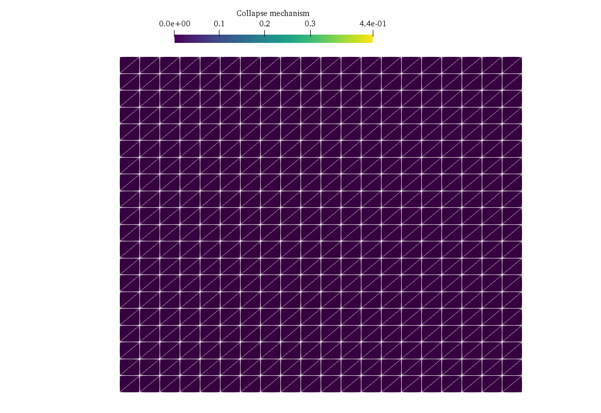

Three-dimensional limit analysis problem using Semi-Definite Programming#
In this demo, we consider a classical limit analysis problem, namely a slope stability problem for a cohesive-frictional material described by a Mohr-Coulomb criterion. The geometry being three-dimensional in this example, the corresponding problem will be a Semi-Definite Programming (SDP) problem. We show how to formulate such constraints using the dolfinx_optim package.
In the following, we will denote by \(\mathbb{S}_n\) the set of symmetric \(n\times n\) matrices.
Problem formulation#
We consider a soil domain \(\Omega = [0;L]\times [0;W] \times [0;H]\) with homogeneous Dirichlet boundary conditions \(\boldsymbol{u}=0\) on the right \(x=L\) and bottom \(z=0\). The remaining boundaries have homogeneous Neumann boundary conditions. The loading consists of a gravitational body force \(\boldsymbol{f}=(0,0,-\gamma)\) with \(\gamma\) being the soil self-weight. The soil obeys a Mohr-Coulomb criterion of cohesion \(c\) and internal friction angle \(\phi\), i.e. the stress state \(\boldsymbol{\sigma}\in \mathbb{S}_3\) must satisfy \(\boldsymbol{\sigma}\in G\) where:
where \(a=\dfrac{1-\sin\phi}{1+\sin\phi}\), \(\sigma_M = \max_{I} \{\sigma_I\}\) and \(\sigma_m = \min_I \{\sigma_I\}\) with \(\sigma_I\) being the eigenvalues of \(\boldsymbol{\sigma}\).
The limit analysis problem amounts to finding the slope stability factor given by \(SF=\lambda^+\dfrac{\gamma H}{c}\) where \(\lambda^+\) is obtained from solving:
in which \(\nabla^s \boldsymbol{u} = \frac{1}{2}(\nabla \boldsymbol{u} + \nabla \boldsymbol{u}^T)\) is the symmetric gradient and \(\pi\) is the support function of the convex set \(G\):
Conic reformulation#
Following [Martin and Makrodimopoulos, 2008], the above support function can be expressed equivalently in a conic-representable fashion using two auxiliary SDP variables \(\boldsymbol{Y}_1,\boldsymbol{Y}_2\) as follows:
Implementation#
We first important relevant packages and define the box mesh.
from mpi4py import MPI
import numpy as np
import ufl
from dolfinx import mesh, fem, io
from dolfinx_optim.mosek_io import MosekProblem
from dolfinx_optim.convex_function import ConvexTerm
from dolfinx_optim.cones import SDP
from dolfinx_optim.utils import to_vect
L, W, H = (1.2, 2.0, 1.0)
Nx, Ny, Nz = (20, 1, 20)
domain = mesh.create_box(MPI.COMM_WORLD, [(0, 0, 0), (L, W, H)], [Nx, Ny, Nz])
Note that we used on purpose only 1 element in the \(y\)-direction with quite a large width in order to reproduce a 2D plane-strain situation for which we have a good approximation of the exact solution and limit the computation time of this demo.
We then define the conic representation of the Mohr-Coulomb support function:
c = fem.Constant(domain, 1.0)
phi = fem.Constant(domain, np.pi / 6.0)
class MohrCoulomb(ConvexTerm):
"""SDP implementation of Mohr-Coulomb criterion."""
def conic_repr(self, X):
Y1 = self.add_var((3,3), cone=SDP(3))
Y2 = self.add_var((3,3), cone=SDP(3))
a = (1 - ufl.sin(phi)) / (1 + ufl.sin(phi))
self.add_eq_constraint(X - to_vect(Y1) + to_vect(Y2))
self.add_eq_constraint(ufl.tr(Y2) - a * ufl.tr(Y1))
self.add_linear_term(2 * c * ufl.cos(phi) / (1 + ufl.sin(phi)) * ufl.tr(Y1))
In the above, symmetric \(n\times n\) matrix variables are created. The SDP constraint is enforced through the cone SDP(3). Note that equality constraints expect scalar or vectors so that we use the to_vect utility function to reshape the matrix variables to a vector form.
We can now set up the loading, function spaces and boundary conditions:
gamma = 10.0
f = fem.Constant(domain,(0, 0, -gamma))
def border(x):
return np.isclose(x[0], L) | np.isclose(x[2], 0)
gdim = 3
V = fem.functionspace(domain, ("CG", 2, (gdim,)))
bc_dofs = fem.locate_dofs_geometrical(V, border)
bcs = [fem.dirichletbc(np.zeros((gdim,)), bc_dofs, V)]
We now initiate the MosekProblem object and first add the linear equality constraint:
prob = MosekProblem(domain, "3D limit analysis")
u = prob.add_var(V, bc=bcs, name="Collapse mechanism")
prob.add_eq_constraint(ufl.dot(f,u)*ufl.dx, b=1.0)
We now add the convex term corresponding to the support function.
crit = MohrCoulomb(ufl.sym(ufl.grad(u)), 2)
prob.add_convex_term(crit)
The problem can then be solved and results are exported to Paraview.
pobj, dobj = prob.optimize()
with io.VTKFile(MPI.COMM_WORLD, "results.pvd", "w") as vtk:
vtk.write_function(u)
Show code cell output
Problem
Name : 3D limit analysis
Objective sense : minimize
Type : CONIC (conic optimization problem)
Constraints : 96730
Affine conic cons. : 0
Disjunctive cons. : 0
Cones : 0
Scalar variables : 15130
Matrix variables : 19200 (scalarized: 115200)
Integer variables : 0
Optimizer started.
GP based matrix reordering started.
GP based matrix reordering terminated.
Optimizer - threads : 14
Optimizer - solved problem : the primal
Optimizer - Constraints : 96730
Optimizer - Cones : 1
Optimizer - Scalar variables : 15130 conic : 15130
Optimizer - Semi-definite variables: 19200 scalarized : 115200
Factor - setup time : 2.78
Factor - dense det. time : 1.12 GP order time : 0.21
Factor - nonzeros before factor : 3.89e+06 after factor : 6.91e+06
Factor - dense dim. : 11786 flops : 5.47e+11
Factor - GP saved nzs : 5.44e+05 GP saved flops : 2.37e+09
ITE PFEAS DFEAS GFEAS PRSTATUS POBJ DOBJ MU TIME
0 6.4e+01 1.0e+00 9.3e+00 0.00e+00 8.313843876e+00 0.000000000e+00 1.0e+00 2.89
1 6.0e+01 9.4e-01 4.2e+01 -1.96e+01 2.057973683e+01 2.220911241e+01 9.4e-01 5.98
2 5.4e+01 8.5e-01 6.3e+01 -3.74e+01 1.541073344e+00 6.470667017e+01 8.5e-01 8.65
3 4.3e+01 6.8e-01 6.1e+01 -1.94e+00 1.953587175e+00 9.416024834e+01 6.8e-01 11.35
4 3.0e+01 4.7e-01 5.3e+01 -1.69e+00 2.877919262e+00 1.476198772e+02 4.7e-01 14.14
5 1.0e+01 1.6e-01 2.4e+01 -1.15e+00 9.257383903e+00 2.735340275e+02 1.6e-01 17.02
6 2.3e+00 3.6e-02 2.7e+00 2.91e-01 1.778475369e+01 7.996443998e+01 3.6e-02 20.07
7 4.0e-01 6.2e-03 4.7e-02 1.26e+00 3.875455863e+00 4.510374853e+00 6.2e-03 23.44
8 1.9e-01 3.0e-03 1.3e-02 4.28e+00 1.289498450e+00 1.509526752e+00 3.0e-03 26.30
9 9.9e-02 1.5e-03 4.1e-03 2.09e+00 9.199815082e-01 9.991602610e-01 1.5e-03 29.14
10 5.6e-02 8.7e-04 1.5e-03 1.53e+00 8.107590068e-01 8.460483001e-01 8.7e-04 32.01
11 1.0e-02 1.6e-04 7.5e-05 1.31e+00 7.169651108e-01 7.194055361e-01 1.6e-04 35.27
12 1.9e-03 3.0e-05 2.7e-06 1.06e+00 6.994801453e-01 6.995547014e-01 3.0e-05 38.75
13 4.0e-04 6.3e-06 1.3e-07 1.01e+00 6.958774407e-01 6.958786193e-01 6.3e-06 42.21
14 1.7e-04 2.7e-06 3.0e-08 1.00e+00 6.953302559e-01 6.953302373e-01 2.7e-06 45.22
15 2.9e-05 4.5e-07 6.2e-10 1.00e+00 6.949877854e-01 6.949875713e-01 4.5e-07 48.73
16 1.6e-05 2.5e-07 2.4e-10 9.97e-01 6.949594176e-01 6.949592945e-01 2.5e-07 51.91
17 8.4e-07 3.7e-08 4.3e-12 9.96e-01 6.949278248e-01 6.949278054e-01 3.7e-08 55.37
Optimizer terminated. Time: 55.47
Interior-point solution summary
Problem status : PRIMAL_AND_DUAL_FEASIBLE
Solution status : OPTIMAL
Primal. obj: 6.9492782476e-01 nrm: 1e+01 Viol. con: 3e-06 var: 0e+00 barvar: 0e+00
Dual. obj: 6.9492780542e-01 nrm: 8e-01 Viol. con: 0e+00 var: 8e-11 barvar: 2e-09
We can then check the solution compared with the exact solution provided by [Chen, 2013].
print("2D factor [Chen] (for phi=30°):", 6.69)
print("Computed factor:", pobj*float(gamma*H/c))
2D factor [Chen] (for phi=30°): 6.69
Computed factor: 6.949278247567571
